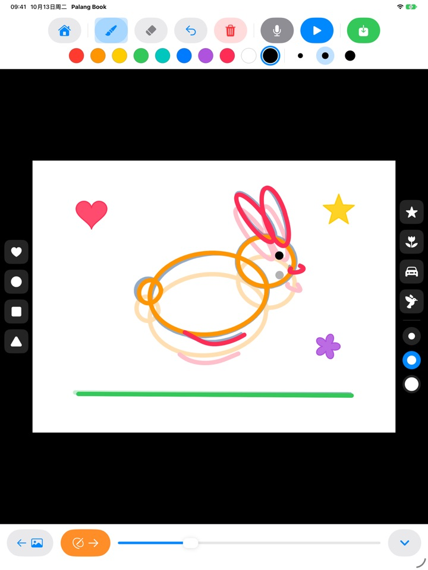
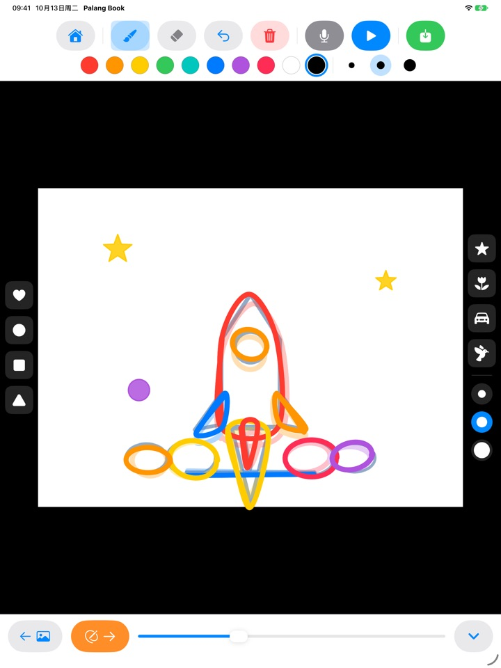
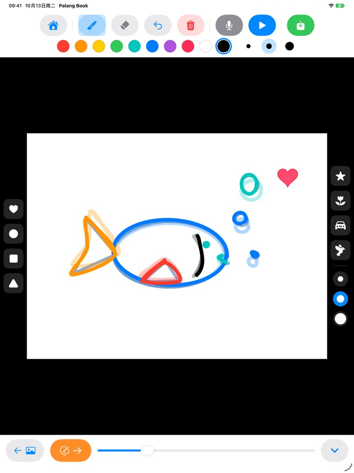
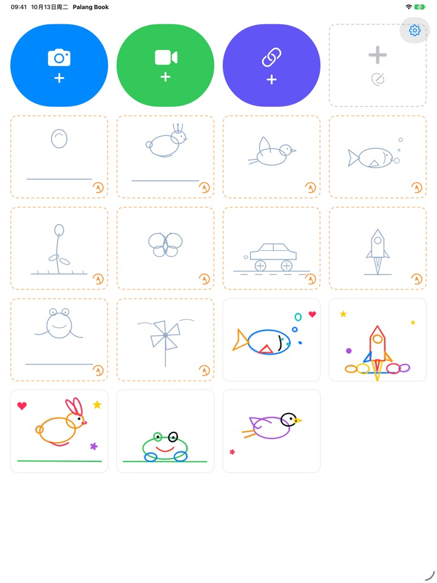

照着描一描
画就动起来
照着淡淡的底稿一页一页描，点一下播放，底稿就消失了，只剩孩子自己画的线条动起来。所有按钮都是图画，还不识字的小朋友也能自己玩。
仅支持 iPad。3 套描画免费使用。

一页一页画画看
画好一页，点橙色箭头翻到下一页，上一页会淡淡地透出来。画上两三页后，点蓝色播放按钮，画就动起来了。
孩子画的画，只停在一张纸上不可惜吗？
做动画要把差不多的画一点点改着画很多张，孩子自己往往不知道从哪儿下笔。Palang Book 先铺好带着动作的淡淡底稿，孩子只要沿着线描就行。点下播放的那一刻，就能看到自己的画动起来。
沿着线描，就是动画
弹跳的皮球、蹦蹦跳跳的小兔子、飞翔的小鸟、游来游去的小鱼、慢慢绽放的花朵、蝴蝶、飞驰的汽车、升空的火箭、青蛙、风车。每套约有 20 页底稿。
上一页的画会淡淡地透出来，接着画下一页很容易；播放时底稿消失，只有孩子的画在动。

盖印章，十种颜色
爱心、圆形、方形、三角形、星星、花朵、汽车、小鸟印章，轻轻一点就能盖上去装饰。印章大小和画笔粗细各有三种，颜色有十种。
有橡皮擦和撤销，画错了也能马上重画。用手指或 Apple Pencil 都能画。

在自己的视频上画，也能在白纸上画
可以导入自己拍的视频或照片 App 里的视频，在上面照着描。遮住背景后，只有画过的画面会在白纸上连续播放。也有不用底稿、在白纸上随意画的翻页书。
点一下麦克风，就能把孩子的声音一起录进去；完成的作品可以保存成视频到照片 App，和家人分享。

三步就能开始
- 1
点一张底稿卡片
首页上橙色虚线框的卡片就是描画。
- 2
画一页，翻一页
点橙色箭头，就会翻到下一页。
- 3
点播放
点蓝色播放按钮，自己的画就动起来了。
按钮说明
- 橙色虚线卡片
- 开始照着底稿描画
- 灰色虚线卡片
- 空白翻页书
- 蓝色相机
- 在自己拍的视频上画
- 绿色视频
- 导入照片 App 里的视频
- 靛蓝色链接
- 粘贴视频文件链接并打开
- 橙色箭头
- 翻到下一页
- 蓝色播放
- 播放动画，再点一下停止
- 弯曲箭头
- 撤销最后一笔
- 红色垃圾桶
- 清空整页（可以用撤销恢复）
- 麦克风
- 动画循环播放时录下声音
- 视频图标
- 遮住视频背景（变成粉色斜线时只播放画）
- 绿色保存
- 以视频形式保存到照片 App
要删除作品，请在首页长按作品卡片。画、录音和导入的视频会一起删除。
先免费玩个够，喜欢再买终身解锁
免费
- 3 套描画（皮球、兔子、花朵）
- 保存 3 件作品
- 导入 1 次视频
- 空白翻页书最多 10 页
- 录音最长 15 秒
- 印章、颜色、画笔，保存到照片 App
终身解锁
- 全部描画，包括以后推出的新套装
- 作品、页数、视频、录音时长都不限
- 保存的视频结尾不再有 Palang Book 卡片
不是订阅，只需购买一次。支持家人共享，全家的 iPad 都能用。
免费保存的视频结尾会有一张简短的 Palang Book 卡片。如果你在终身解锁推出之前就在用 Palang Book，所有功能会继续保持解锁。
常见问题
底稿怎么用？
淡蓝色的线就是底稿，孩子沿着线描就行。点一下播放，底稿会消失，只有孩子画的线条在动。画完大约 20 页就完成了。
我想不要视频，只播放和保存画。
在视频作品里，点顶部工具栏的视频图标，让它变成粉色斜线，这样播放和保存时都只在白色背景上显示画。只有画过的画面会接着播放，所以在长视频上只画几页，也能变成一段短动画。
做好的视频保存在哪里？
点工具栏最右边的绿色保存按钮，mp4 视频就会保存到照片 App。第一次保存时，请允许访问照片。
怎么加入声音？
点麦克风按钮，动画循环播放的同时开始录音，点停止按钮就结束录音。重新录音会覆盖之前的录音。保存时声音也会一起放进视频里。
视频链接打不开。
请检查网络连接，并确认粘贴的地址是直接指向视频文件的链接（以 .mp4 等结尾的地址）。视频分享网站的网页链接无法打开。为了保护版权，请使用自己拍摄的视频或可以自由使用的视频。
手掌碰到屏幕，画出了多余的线。
用弯曲箭头可以去掉最后一笔，红色垃圾桶会清空整页（用撤销还能恢复）。如果经常这样，请发邮件告诉我们，我们来帮你。
为什么购买页面前会出现计算题？
这是为了不让孩子自己进入购买页面。孩子点到锁住的内容时，会出现一把大锁和“请给大人看”，需要大人输入乘法题的答案，购买页面才会打开。
怎么恢复购买？
点首页右上角的齿轮，选择终身解锁，答对大人验证题后，点恢复购买。请确认登录的是购买时使用的同一个 Apple 账户。
怎么在 App 里发送反馈？
点首页上的齿轮，选择发送反馈。可以附上截图；如果希望收到回复，请留下姓名和邮箱。请由家长来发送反馈。
会收集孩子的信息吗？
不会。Palang Book 不收集任何个人信息，画和录音只保存在这台 iPad 上。详情请查看隐私政策。
有任何疑问或问题，欢迎发邮件到 mizzking75@gmail.com。我们通常会在 2 到 3 天内回复。